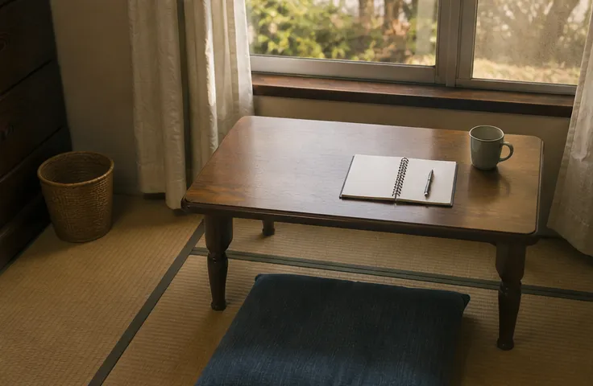
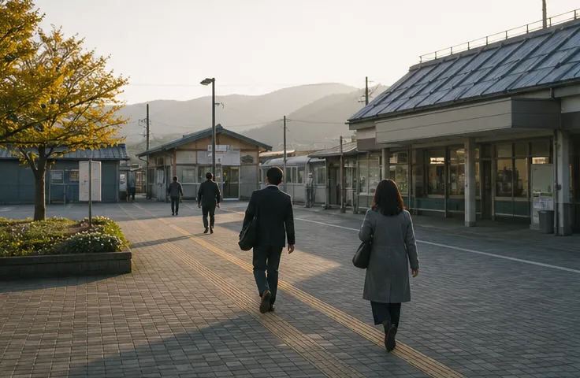

相談窓口
アケビラキ 相談窓口
はじめての相談は、まずここで。面談室は3つあり、ほかの相談者と顔を合わせずに話せるよう、時間をずらしてご案内しています。
| 所在地 | 〒252-0243 神奈川県相模原市中央区上溝5-18-9 みなみ野ビル3階 |
|---|---|
| 電話 | 042-098-4172（相談ダイヤル） |
| 受付 | 平日 10:00〜19:00・土曜 10:00〜15:00（日曜・祝日休み） |
| アクセス | JR相模線「上溝駅」から徒歩約10分 |
相談窓口
はじめての相談は、まずここで。面談室は3つあり、ほかの相談者と顔を合わせずに話せるよう、時間をずらしてご案内しています。
| 所在地 | 〒252-0243 神奈川県相模原市中央区上溝5-18-9 みなみ野ビル3階 |
|---|---|
| 電話 | 042-098-4172（相談ダイヤル） |
| 受付 | 平日 10:00〜19:00・土曜 10:00〜15:00（日曜・祝日休み） |
| アクセス | JR相模線「上溝駅」から徒歩約10分 |

2026年一時滞在住宅
住まいと仕事が決まるまでのあいだ、安心して眠れる場所です。個室にはそれぞれ鍵がかかり、机と寝具、エアコンを備えています。台所・洗濯機・シャワーは共用です。
| 所在地 | 神奈川県相模原市中央区上溝7丁目（詳しい番地は入居が決まった方にお伝えします） |
|---|---|
| 電話 | 042-098-4175（平日 10:00〜17:00） |
| 部屋数 | 個室14室（うち2室は女性専用フロア） |
| 滞在期間 | 原則3か月まで |
| 利用料 | 1日800円（水道光熱費・寝具を含む）。最初のお給料が出てからの後払いもできます |
| 入居 | 相談窓口での面談のあと、空き状況に合わせてご案内します |

サテライト
町田市とその周辺にお住まいの方のための相談場所です。相談は予約制なので、お電話かフォームで日時をお知らせください。
| 所在地 | 〒194-0013 東京都町田市原町田4-11-3 第二ひかりビル2階 |
|---|---|
| 電話 | 042-098-4174 |
| 受付 | 火・木・土 10:00〜17:00（予約制） |
| アクセス | JR横浜線「町田駅」から徒歩約8分 |
Akebiraki Lab
窓口で相談を受けていると、「今夜泊まるところがない」という声がいちばん多く届きます。仕事も部屋も、探すには数日から数週間かかります。そのあいだ安心して眠れる場所があれば、面接にも落ち着いて向かえるはずだと考えました。
ハウス上溝は、使われなくなった社員寮を借り受け、サポーターの会費と地元企業の協力で改修した住宅です。開所後は、入居した方の声を聞きながら、部屋のしつらえや滞在の決まりを少しずつ見直していきます。